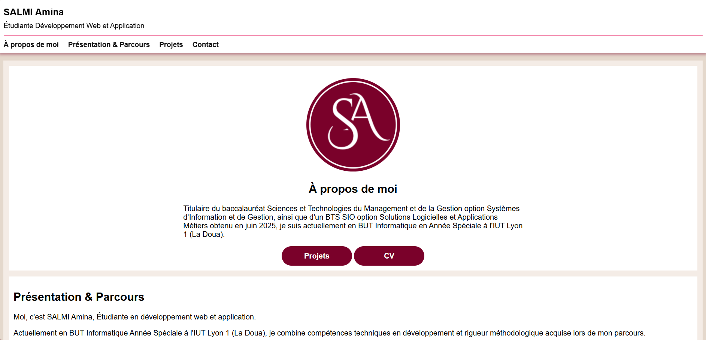
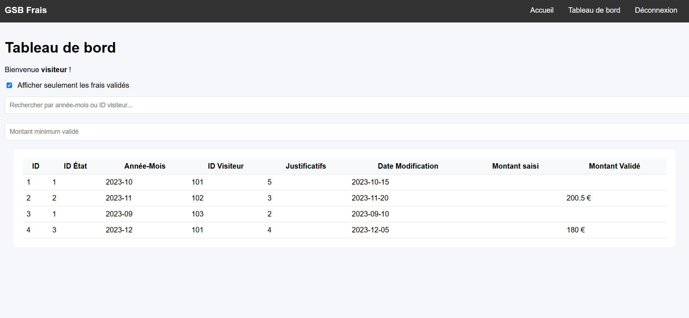
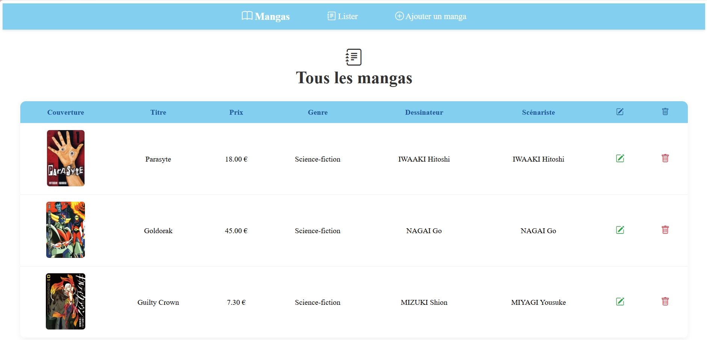

Projet Portfolio : site Web
Période : Octobre 2026
Développement de mon portfolio en respectant l'accessibilité.
Technologies utilisées : HTML, CSS

Projet GSB : Galaxy-Swiss Bourdin
Période totale: Décembre 2025 - Juin 2026
Conception et création d'une plateforme de saisie et suivi des frais médicaux pour visiteurs, avec interface sécurisée.
Technologies utilisées :
-
Première Partie :
- Conception et création de la base de donnée MySQL/MariaDB
- Plateforme PHP/Laravel de saisie et suivi des frais médicaux pour visiteurs, avec interface sécurisée.
-
Deuxième Partie :
- Transformation de la plateforme en PHP/Laravel en API Back-End
- Test de l'appel de l'API avec Postman
- Création du Front-End en JS/React

Projet Mangas : Bibliothèque de mangas
Période : Janvier - Mars 2026
Application Laravel pour gérer une collection de mangas avec filtres par genre et gestion des auteurs.
Technologies utilisées : PHP, CSS